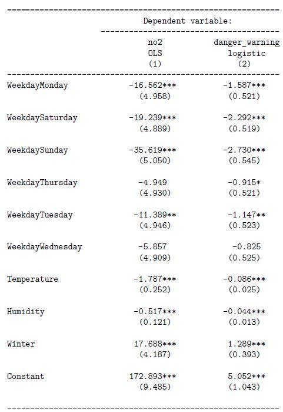

5.4 Regneoppgaver
5.4.1 Oppgaver om logistisk regresjon
Kommentar: Oppgave 1 a) og oppgave 2) er svært like i hva du skal gjøre, bare at den siste er mer realistisk.
Oppgave 1 Du har estimert en logistisk regresjonsmodell med to forklaringsvariabler \(x_1\) og \(x_2\). Koeffisientene i modellen er estimert til \(\hat{\beta}_0 = 0.4\), \(\hat{\beta}_1 = -0.1\) og \(\hat{\beta}_2 = 0.3\). Du observerer så et nytt individ med forklaringsvariablene \(x_1 = 1\) og \(x_2 = 2\).
- Prediker sannsynlighet for at \(Y=1\) for dette individet.
Løsning
\[z = \beta_0 + \beta_1x_1 + \beta_2x_2 = 0.4 -0.1\times1 + 0.3\times2 = 0.9\] Den predikerte sannsynligheten er gitt ved følgende sammenheng:
\[P(Y=1|Z=z) = \frac{e^z}{1+e^z} = \frac{e^{0.9}}{1 + e^{0.9}} \approx 0.71.\]
- Klassifiser det nye individet.
Løsning
Siden vi estimerer \(P(Y=1)\) til å være \(0.71\) som er større enn \(0.5\) klassifiserer vi dette individet til \(\hat{y}=1\). Avhengig av kontekst, kan det være relevant å bruke enn høyere eller lavere terskel enn \(0.5\), men dette er altså standardverdien.
Oppgave 2 (Individuell Eksamen V2020 1 i))
Denne eksamensoppgaven handlet om luftforurensning der myndighetene bruker en målestasjon for å advare innbyggerne dersom konsentrasjonen av nitrogendioksid (NO\(_2\)) overstiger 100 \(\mu\textrm{g}/\textrm{m}^3\). I en av deloppgavene tilpasses det en logistisk regresjonsmodell der responsvariabelen er en dummyvariabelen danger_warning, som indikerer om gjenomsnittskonsentrasjonen av NO\(_2\) den aktuelle dagen oversteg 100 \(\mu\textrm{g}/\textrm{m}^3\). Dersom det skjer må myndighetene utstede et såkalt gult farevarsel. Den estimerte modellen er gitt i kolonne (2) i tabellen under.
..... I morgen er det lørdag 16. mai, og i den aktuelle byen er det meldt en gjennomsnittlig temperatur på 19 \(^\circ\)C og en gjennomsnittlig relativ luftfuktighet på 47%.
- Bruk den logistiske regresjonsmodellen til å predikere sannsynligheten for at gjennomsnittlig NO\(\mathbf{_2}\)-konsentrasjon overstiger 100 \(\mu\textrm{g}/\textrm{m}^3\). Gi en kort vurdering om myndighetene bør utstede gult farevarsel. (Husk at luftfuktigheten er gitt på skala 0--100, og ikke 0--1).

Løsning
Den predikerte log-oddsen får vi ved å sette inn for variablene (lørdag, temperatur, fuktighet, vinterdummyen er null):
\[z = 5.052 + -2.292 - 0.086*19 - 0.044*47 = -0.942.\] Den predikerte sannsynligheten er gitt ved følgende sammenheng:
\[P(Y=1|Z=z) = \frac{e^z}{1+e^z} = \frac{e^{-0.942}}{1 + e^{-0.942}} \approx 0.28.\]
Den predikerte sannsynligheten er klart under 50%, som passer godt med den tidlighere analysen vår. Det er snakk om en forholdsvis varm lørdag i sommerhalvåret, og vi vil nok ikke utstede farevarsel.
Det kan også være gode argumenter for at vi ikke nødvendigvis bruker 50% som terskel for farevarsel. Kanskje er det mer alvorlig å ikke utstede et farevarsel som burde vært sendt ut fordi det kan være farlig for folk, enn å utstede et unødvendig farevarsel. Føre var osv., og det kan tilsi at vi f.eks. bruker 40% eller 30% sannsynlighet som grense. Det kommer litt an på situasjonen, som vi ikke har full oversikt over her.
5.4.2 Oppgaver om KNN
Oppgave 1 (Individuell hjemmeeksamen H2020, oppgave 3)
Vi har følgende datasett med seks observasjoner bestående av en binær responsvariabel \(y\) og to forklaringsvariabler \(x_1\) og \(x_2\):
| y | x1 | x2 |
|---|---|---|
| 0 | 3 | 4 |
| 0 | 4 | 5 |
| 1 | 5 | 3 |
| 0 | 3 | 6 |
| 1 | 4 | 3 |
| 1 | 6 | 2 |
Du observerer så forklaringsvariablene \((x_1, x_2) = (3, 3)\) for et nytt individ.
- Regn ut hva klassifiseringen av \(y\) blir for det nye individet ved å bruke k-nearest neighbor (KNN), med \(k=3\).
Løsning
Vi begynner med å regne ut den euklidske avstanden mellom \((3,3)\) og alle punktene \((x_1, x_2)\) i datasettet vårt. F.eks er avstanden mellom \((3,3)\) og \((3,4)\)
\[\begin{equation*} d((3,3), (3,4)) = \sqrt{(3 - 3)^2 + (3 - 4)^2} = 1 \end{equation*}\]Vi kan så legge disse avstandene inn i en egen kolonne i tabellen:
| y | x1 | x2 | avstand |
|---|---|---|---|
| 0 | 3 | 4 | 1.000 |
| 0 | 4 | 5 | 2.236 |
| 1 | 5 | 3 | 2.000 |
| 0 | 3 | 6 | 3.000 |
| 1 | 4 | 3 | 1.000 |
| 1 | 6 | 2 | 3.162 |
Vi ser da at observasjon \(1\),\(3\) og \(5\) med avstander på h.h.v. \(1\), \(2\) og \(1\) er de tre nærmeste naboene, og blant dem er det 2 mot 1 i flertall for å klassifisere \(y\) som en 1'er. Altså er \(\hat{y}=1\).
Det går selvsagt an å løse oppgaven visuelt også.
- Hvordan fungerer KNN når \(k = n\), hvor \(n\) er antall observajoner i datasettet? Hva vil skje dersom \(k = 6\) for dette datasettet?
Løsning
Siden vi bare har seks observasjoner vil alle verdier av \(k\geq 6\) fullstendig ignorere informasjonen som ligger i forklaringsvariablene. Klassifiseringen vil da bare være basert på om det totalt sett er mest 1'ere eller 0'ere. I dette spesifikke datasettet har vi totalt tre 1'ere og tre 0'ere, så enhver majortetsavstemning med \(k\geq 6\) blir uavgjort. Altså vil det her ikke være mulig å oppnå flertall for verken 0'er eller 1'er for store verdier av \(k\).
5.4.3 Oppgaver om paneldata
Oppgave 2 Se Oppgave 2 individuell hjemmeeksamen H2020 ??